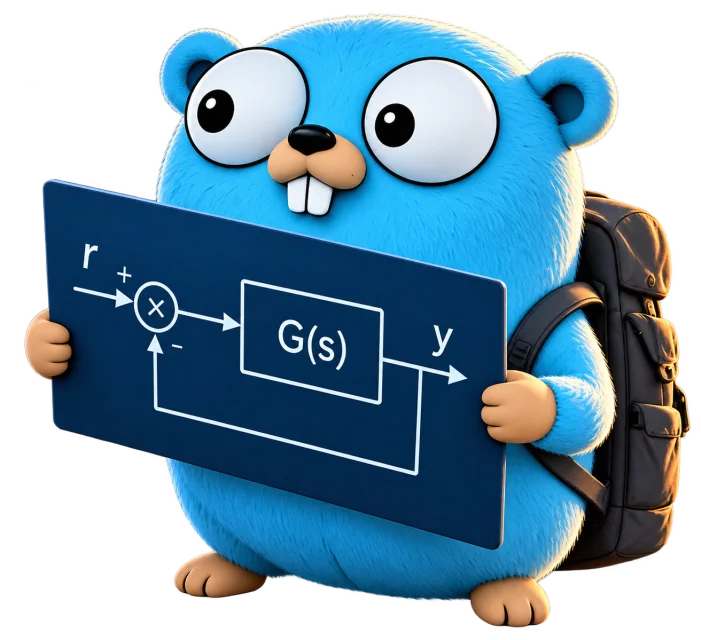
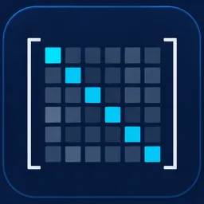
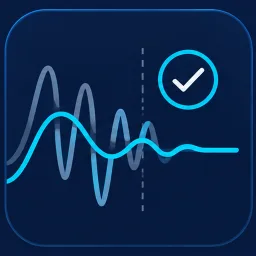
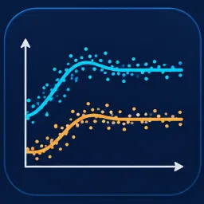
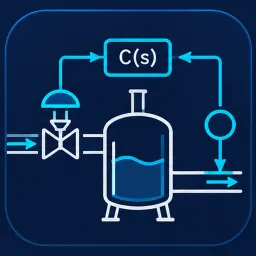

Each layer builds on the one below it: dense linear algebra, then state-space control, then identification and simulation tools.

controlsys
A control-systems toolbox for linear time-invariant models, with state space as the core representation.
- Bode, Nyquist, margins, root locus
- LQR, LQG, H2, H∞, pole placement
- PID tuning, Systune, Kalman filters
go get plantcontrol.org/v2/controlsys/v2
github.com/PlantControl/controlsys →

gonum
PlantControl's fork of Gonum, focused on pure-Go BLAS and LAPACK, with the extra routines that control design needs.
- Generalized eigenproblems (Dgges, Dtgsen)
- Checked against netlib reference LAPACK
- SIMD kernels in progress for ARM64 and AMD64
go get plantcontrol.org/v1/gonum
github.com/PlantControl/gonum →

oracle-pattern
Record what legacy numerical code does once, then replay those recordings against its modern replacement. Demonstrated with a SLICOT routine ported to Go.
- Versioned baselines of recorded calls
- Agent skill and migration playbook
github.com/PlantControl/oracle-pattern →

systemidPrivate
Native Go system identification: ARX, ARMAX, subspace (N4SID, MOESP, CVA), closed-loop and frequency-domain methods. Results keep a reproducible record of how each model was fitted.

process-labPrivate
A browser workbench for block diagrams, simulation, PID/LQG/H∞ design, and system identification. Ships as a single Go executable.